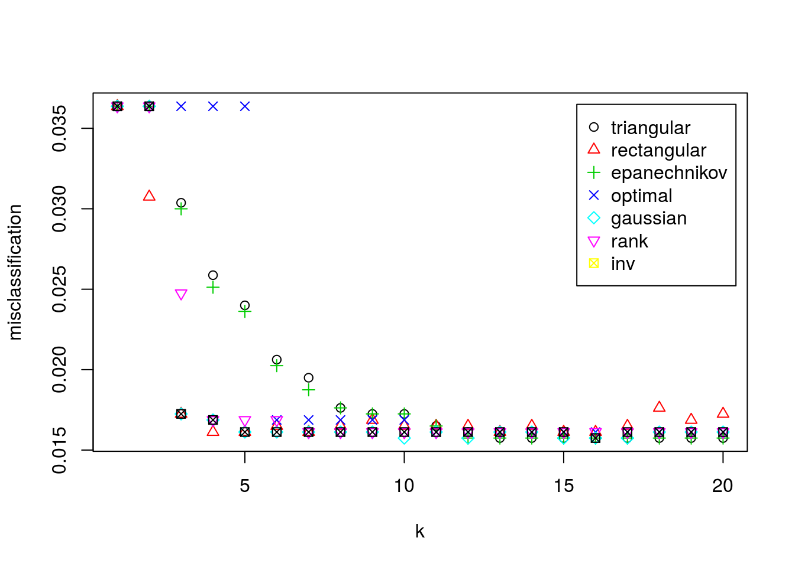

Ejercicio 1 Problema de clasificación
1.1 Pasos previos
Para empezar, importamos nuestro archivo de datos datawork.csv.
## Parsed with column specification:
## cols(
## .default = col_double(),
## clasobj = col_character(),
## x30 = col_integer()
## )## See spec(...) for full column specifications.Veamos una breve descripción del conjunto de datos.
head(df)## # A tibble: 6 × 42
## clasobj varobj x01 x02 x03 x04 x05 x06 x07 x08 x09
## <chr> <dbl> <dbl> <dbl> <dbl> <dbl> <dbl> <dbl> <dbl> <dbl> <dbl>
## 1 CC 12.63 0.64 0.68 25.06 33.42 103.18 1.08 80.27 14.83 18.09
## 2 AA 25.08 0.70 0.72 16.08 10.98 38.31 1.62 57.32 30.72 17.13
## 3 DD 28.84 0.45 0.71 57.78 48.77 148.21 0.34 174.54 50.72 2.72
## 4 AA 26.58 0.15 0.56 17.79 10.04 30.33 0.86 57.44 167.47 23.09
## 5 BB 18.53 0.70 0.54 17.48 25.51 82.42 1.04 57.55 40.13 1.70
## 6 CC 14.20 0.37 0.75 50.01 32.25 99.49 0.92 153.46 1.90 1.76
## # ... with 31 more variables: x10 <dbl>, x11 <dbl>, x12 <dbl>, x13 <dbl>,
## # x14 <dbl>, x15 <dbl>, x16 <dbl>, x17 <dbl>, x18 <dbl>, x19 <dbl>,
## # x20 <dbl>, x21 <dbl>, x22 <dbl>, x23 <dbl>, x24 <dbl>, x25 <dbl>,
## # x26 <dbl>, x27 <dbl>, x28 <dbl>, x29 <dbl>, x30 <int>, x31 <dbl>,
## # x32 <dbl>, x33 <dbl>, x34 <dbl>, x35 <dbl>, x36 <dbl>, x37 <dbl>,
## # x38 <dbl>, x39 <dbl>, x40 <dbl>summary(df)## clasobj varobj x01 x02
## Length:4000 Min. : 10.49 Min. :0.0700 Min. :0.1300
## Class :character 1st Qu.: 14.35 1st Qu.:0.4000 1st Qu.:0.5100
## Mode :character Median : 19.34 Median :0.5000 Median :0.6000
## Mean : 20.86 Mean :0.4989 Mean :0.5977
## 3rd Qu.: 25.48 3rd Qu.:0.6000 3rd Qu.:0.7000
## Max. :713.81 Max. :0.9400 Max. :0.9300
## x03 x04 x05 x06
## Min. : 0.94 Min. :-0.64 Min. : 2.96 Min. :0.080
## 1st Qu.: 15.55 1st Qu.:21.56 1st Qu.: 69.82 1st Qu.:0.660
## Median : 25.98 Median :29.54 Median : 94.06 Median :0.940
## Mean : 30.42 Mean :29.48 Mean : 93.91 Mean :1.015
## 3rd Qu.: 40.17 3rd Qu.:37.34 3rd Qu.:117.63 3rd Qu.:1.270
## Max. :166.17 Max. :62.67 Max. :194.56 Max. :3.260
## x07 x08 x09 x10
## Min. : 3.61 Min. : 0.02 Min. : 0.000 Min. : 0.0000
## 1st Qu.: 51.86 1st Qu.: 5.58 1st Qu.: 1.147 1st Qu.: 0.1000
## Median : 83.12 Median : 21.86 Median : 2.020 Median : 0.2500
## Mean : 96.34 Mean : 162.95 Mean : 4.502 Mean : 0.4398
## 3rd Qu.:125.90 3rd Qu.: 80.82 3rd Qu.: 3.480 3rd Qu.: 0.5700
## Max. :502.70 Max. :68676.15 Max. :1097.640 Max. :24.1800
## x11 x12 x13 x14
## Min. : 0.490 Min. :10.57 Min. : 9.26 Min. :10.21
## 1st Qu.: 2.158 1st Qu.:15.45 1st Qu.:15.45 1st Qu.:15.40
## Median : 2.960 Median :17.66 Median :17.60 Median :17.65
## Mean : 4.197 Mean :17.56 Mean :17.58 Mean :17.57
## 3rd Qu.: 4.152 3rd Qu.:19.70 3rd Qu.:19.70 3rd Qu.:19.69
## Max. :688.530 Max. :25.16 Max. :24.86 Max. :24.64
## x15 x16 x17 x18
## Min. :10.15 Min. : 9.65 Min. :10.13 Min. :10.47
## 1st Qu.:15.42 1st Qu.:15.37 1st Qu.:15.46 1st Qu.:15.43
## Median :17.58 Median :17.55 Median :17.60 Median :17.62
## Mean :17.55 Mean :17.55 Mean :17.57 Mean :17.57
## 3rd Qu.:19.68 3rd Qu.:19.66 3rd Qu.:19.67 3rd Qu.:19.67
## Max. :24.73 Max. :25.50 Max. :25.15 Max. :25.22
## x19 x20 x21 x22
## Min. :10.06 Min. :10.26 Min. : 9.59 Min. : 9.44
## 1st Qu.:15.44 1st Qu.:15.37 1st Qu.:15.45 1st Qu.:15.39
## Median :17.61 Median :17.66 Median :17.58 Median :17.63
## Mean :17.58 Mean :17.58 Mean :17.54 Mean :17.57
## 3rd Qu.:19.72 3rd Qu.:19.67 3rd Qu.:19.63 3rd Qu.:19.71
## Max. :25.08 Max. :24.95 Max. :25.09 Max. :24.99
## x23 x24 x25 x26
## Min. : 9.99 Min. : 9.63 Min. : 9.03 Min. : 9.89
## 1st Qu.:15.47 1st Qu.:15.41 1st Qu.:15.44 1st Qu.:15.39
## Median :17.59 Median :17.50 Median :17.64 Median :17.59
## Mean :17.57 Mean :17.55 Mean :17.55 Mean :17.59
## 3rd Qu.:19.66 3rd Qu.:19.70 3rd Qu.:19.75 3rd Qu.:19.73
## Max. :25.29 Max. :25.15 Max. :24.95 Max. :25.05
## x27 x28 x29 x30
## Min. : 5.91 Min. : 7.81 Min. :0.020 Min. :10.00
## 1st Qu.:15.23 1st Qu.:15.92 1st Qu.:0.250 1st Qu.:14.00
## Median :17.74 Median :18.41 Median :0.360 Median :16.00
## Mean :17.78 Mean :18.47 Mean :0.375 Mean :16.76
## 3rd Qu.:20.36 3rd Qu.:21.14 3rd Qu.:0.490 3rd Qu.:19.00
## Max. :47.94 Max. :28.27 Max. :0.920 Max. :29.00
## x31 x32 x33 x34
## Min. : 75.25 Min. : 79.55 Min. : 81.6 Min. : 83.37
## 1st Qu.:119.00 1st Qu.:118.01 1st Qu.:118.2 1st Qu.:132.24
## Median :135.91 Median :134.82 Median :135.5 Median :151.30
## Mean :135.30 Mean :133.66 Mean :134.2 Mean :150.74
## 3rd Qu.:151.52 3rd Qu.:149.53 3rd Qu.:150.0 3rd Qu.:169.27
## Max. :191.41 Max. :185.77 Max. :189.7 Max. :241.19
## x35 x36 x37 x38
## Min. : 75.3 Min. : 35.80 Min. :-26.19 Min. :203.3
## 1st Qu.:119.4 1st Qu.: 63.55 1st Qu.: 10.10 1st Qu.:326.0
## Median :136.8 Median : 73.68 Median : 19.36 Median :374.3
## Mean :136.5 Mean : 73.64 Mean : 19.57 Mean :372.6
## 3rd Qu.:154.4 3rd Qu.: 83.84 3rd Qu.: 28.77 3rd Qu.:418.2
## Max. :197.3 Max. :110.56 Max. :206.12 Max. :534.5
## x39 x40
## Min. :210.2 Min. :226.3
## 1st Qu.:312.5 1st Qu.:349.1
## Median :357.7 Median :398.4
## Mean :355.8 Mean :397.5
## 3rd Qu.:397.9 3rd Qu.:446.0
## Max. :493.2 Max. :553.8Observamos que la primera columna la interpreta como un string. Transformemos esta columna a factores.
df$clasobj <- as.factor(df$clasobj)Comprobamos que ha leido bien los datos.
summary(df)## clasobj varobj x01 x02
## AA: 626 Min. : 10.49 Min. :0.0700 Min. :0.1300
## BB:1315 1st Qu.: 14.35 1st Qu.:0.4000 1st Qu.:0.5100
## CC:1372 Median : 19.34 Median :0.5000 Median :0.6000
## DD: 687 Mean : 20.86 Mean :0.4989 Mean :0.5977
## 3rd Qu.: 25.48 3rd Qu.:0.6000 3rd Qu.:0.7000
## Max. :713.81 Max. :0.9400 Max. :0.9300
## x03 x04 x05 x06
## Min. : 0.94 Min. :-0.64 Min. : 2.96 Min. :0.080
## 1st Qu.: 15.55 1st Qu.:21.56 1st Qu.: 69.82 1st Qu.:0.660
## Median : 25.98 Median :29.54 Median : 94.06 Median :0.940
## Mean : 30.42 Mean :29.48 Mean : 93.91 Mean :1.015
## 3rd Qu.: 40.17 3rd Qu.:37.34 3rd Qu.:117.63 3rd Qu.:1.270
## Max. :166.17 Max. :62.67 Max. :194.56 Max. :3.260
## x07 x08 x09 x10
## Min. : 3.61 Min. : 0.02 Min. : 0.000 Min. : 0.0000
## 1st Qu.: 51.86 1st Qu.: 5.58 1st Qu.: 1.147 1st Qu.: 0.1000
## Median : 83.12 Median : 21.86 Median : 2.020 Median : 0.2500
## Mean : 96.34 Mean : 162.95 Mean : 4.502 Mean : 0.4398
## 3rd Qu.:125.90 3rd Qu.: 80.82 3rd Qu.: 3.480 3rd Qu.: 0.5700
## Max. :502.70 Max. :68676.15 Max. :1097.640 Max. :24.1800
## x11 x12 x13 x14
## Min. : 0.490 Min. :10.57 Min. : 9.26 Min. :10.21
## 1st Qu.: 2.158 1st Qu.:15.45 1st Qu.:15.45 1st Qu.:15.40
## Median : 2.960 Median :17.66 Median :17.60 Median :17.65
## Mean : 4.197 Mean :17.56 Mean :17.58 Mean :17.57
## 3rd Qu.: 4.152 3rd Qu.:19.70 3rd Qu.:19.70 3rd Qu.:19.69
## Max. :688.530 Max. :25.16 Max. :24.86 Max. :24.64
## x15 x16 x17 x18
## Min. :10.15 Min. : 9.65 Min. :10.13 Min. :10.47
## 1st Qu.:15.42 1st Qu.:15.37 1st Qu.:15.46 1st Qu.:15.43
## Median :17.58 Median :17.55 Median :17.60 Median :17.62
## Mean :17.55 Mean :17.55 Mean :17.57 Mean :17.57
## 3rd Qu.:19.68 3rd Qu.:19.66 3rd Qu.:19.67 3rd Qu.:19.67
## Max. :24.73 Max. :25.50 Max. :25.15 Max. :25.22
## x19 x20 x21 x22
## Min. :10.06 Min. :10.26 Min. : 9.59 Min. : 9.44
## 1st Qu.:15.44 1st Qu.:15.37 1st Qu.:15.45 1st Qu.:15.39
## Median :17.61 Median :17.66 Median :17.58 Median :17.63
## Mean :17.58 Mean :17.58 Mean :17.54 Mean :17.57
## 3rd Qu.:19.72 3rd Qu.:19.67 3rd Qu.:19.63 3rd Qu.:19.71
## Max. :25.08 Max. :24.95 Max. :25.09 Max. :24.99
## x23 x24 x25 x26
## Min. : 9.99 Min. : 9.63 Min. : 9.03 Min. : 9.89
## 1st Qu.:15.47 1st Qu.:15.41 1st Qu.:15.44 1st Qu.:15.39
## Median :17.59 Median :17.50 Median :17.64 Median :17.59
## Mean :17.57 Mean :17.55 Mean :17.55 Mean :17.59
## 3rd Qu.:19.66 3rd Qu.:19.70 3rd Qu.:19.75 3rd Qu.:19.73
## Max. :25.29 Max. :25.15 Max. :24.95 Max. :25.05
## x27 x28 x29 x30
## Min. : 5.91 Min. : 7.81 Min. :0.020 Min. :10.00
## 1st Qu.:15.23 1st Qu.:15.92 1st Qu.:0.250 1st Qu.:14.00
## Median :17.74 Median :18.41 Median :0.360 Median :16.00
## Mean :17.78 Mean :18.47 Mean :0.375 Mean :16.76
## 3rd Qu.:20.36 3rd Qu.:21.14 3rd Qu.:0.490 3rd Qu.:19.00
## Max. :47.94 Max. :28.27 Max. :0.920 Max. :29.00
## x31 x32 x33 x34
## Min. : 75.25 Min. : 79.55 Min. : 81.6 Min. : 83.37
## 1st Qu.:119.00 1st Qu.:118.01 1st Qu.:118.2 1st Qu.:132.24
## Median :135.91 Median :134.82 Median :135.5 Median :151.30
## Mean :135.30 Mean :133.66 Mean :134.2 Mean :150.74
## 3rd Qu.:151.52 3rd Qu.:149.53 3rd Qu.:150.0 3rd Qu.:169.27
## Max. :191.41 Max. :185.77 Max. :189.7 Max. :241.19
## x35 x36 x37 x38
## Min. : 75.3 Min. : 35.80 Min. :-26.19 Min. :203.3
## 1st Qu.:119.4 1st Qu.: 63.55 1st Qu.: 10.10 1st Qu.:326.0
## Median :136.8 Median : 73.68 Median : 19.36 Median :374.3
## Mean :136.5 Mean : 73.64 Mean : 19.57 Mean :372.6
## 3rd Qu.:154.4 3rd Qu.: 83.84 3rd Qu.: 28.77 3rd Qu.:418.2
## Max. :197.3 Max. :110.56 Max. :206.12 Max. :534.5
## x39 x40
## Min. :210.2 Min. :226.3
## 1st Qu.:312.5 1st Qu.:349.1
## Median :357.7 Median :398.4
## Mean :355.8 Mean :397.5
## 3rd Qu.:397.9 3rd Qu.:446.0
## Max. :493.2 Max. :553.8Por último veamos cuantos datos tenemos.
dim(df)## [1] 4000 421.2 Conjunto Test y Train
Fijamos una semilla para trabajar.
set.seed(2017)Seleccionamos los datos, los normalizamos, y los guardamos en las variables df.train y df.test.
library(rknn)## Loading required package: gmp##
## Attaching package: 'gmp'## The following objects are masked from 'package:base':
##
## %*%, apply, crossprod, matrix, tcrossprodn <- dim(df)[1]
val <- sample(1:n, size = round(n/3), replace = FALSE, prob = rep(1/n, n))
df.train <- data.frame(clasobj=df$clasobj[-val], varobj=df$varobj[-val], normalize.unit(df[-val,c(-1,-2)]))
df.test <- data.frame(clasobj=df$clasobj[val], varobj=df$varobj[val], normalize.unit(df[val,c(-1,-2)]))1.3 KNN ponderado con validación cruzada.
Usamos la función train.kknn de la librería kknn.
library(kknn)
(fit.train1 <- train.kknn(clasobj ~ ., df.train[,-2], kmax = 20,
kernel = c("triangular", "rectangular", "epanechnikov", "optimal",
"gaussian", "rank","inv"),
distance = 2))##
## Call:
## train.kknn(formula = clasobj ~ ., data = df.train[, -2], kmax = 20, distance = 2, kernel = c("triangular", "rectangular", "epanechnikov", "optimal", "gaussian", "rank", "inv"))
##
## Type of response variable: nominal
## Minimal misclassification: 0.01574803
## Best kernel: triangular
## Best k: 13Nos dice que el mejor kernel es el rectangular con k igual a 4.
fit.train1$best.parameters ## $kernel
## [1] "triangular"
##
## $k
## [1] 13fit.train1$response ## [1] "nominal"Veamos una representación de los kernels respecto los k.
plot(fit.train1)
1.4 Clasificiación del conjunto test.
Las predicciones para df.test son las siguientes.
(df.pred1 <-predict(fit.train1, df.test[,-2]))## [1] CC CC AA CC BB DD BB BB CC AA DD CC AA AA CC CC BB CC CC DD BB BB CC
## [24] AA CC DD BB CC DD CC CC BB AA CC CC CC BB CC DD BB DD CC BB CC CC BB
## [47] CC AA BB AA BB BB BB CC CC DD BB AA CC DD BB CC CC CC CC BB CC AA CC
## [70] CC BB DD BB CC DD CC BB CC CC CC BB AA BB CC CC CC BB CC BB BB BB DD
## [93] AA DD AA CC CC AA DD DD CC BB AA BB CC BB DD AA DD CC BB CC DD CC CC
## [116] AA DD CC BB BB AA CC BB DD CC AA CC AA CC BB CC BB DD BB DD BB BB CC
## [139] DD BB DD BB BB AA DD DD BB BB BB DD CC CC CC BB BB CC BB CC CC AA DD
## [162] CC DD BB CC BB BB CC BB CC BB AA BB DD BB DD CC CC BB BB AA AA BB CC
## [185] BB DD BB BB CC BB AA AA BB AA BB DD BB BB BB CC CC BB BB CC CC BB BB
## [208] CC CC BB BB BB CC DD DD CC CC BB CC CC CC BB AA BB CC BB BB DD CC DD
## [231] BB CC BB CC CC BB BB BB BB CC AA CC BB BB BB CC BB CC BB BB DD BB CC
## [254] BB CC CC CC AA BB CC CC BB CC BB BB DD BB DD CC AA BB BB BB AA CC CC
## [277] AA CC BB CC DD BB DD CC BB DD CC AA BB DD CC CC BB CC CC DD CC DD BB
## [300] DD BB BB CC AA AA BB BB DD BB BB CC CC BB BB BB CC CC AA BB BB CC BB
## [323] CC CC DD CC BB AA BB DD AA CC AA DD BB BB AA BB CC BB CC CC CC AA BB
## [346] DD BB CC AA CC CC AA CC AA CC AA DD CC BB AA DD DD CC DD DD BB CC BB
## [369] AA BB CC AA CC AA AA AA CC CC CC CC BB DD CC BB CC AA CC AA CC CC BB
## [392] CC BB BB CC DD CC BB CC BB DD CC DD AA BB CC CC CC DD BB BB CC CC DD
## [415] AA AA BB BB DD AA BB CC CC CC CC AA DD CC CC BB DD BB BB BB BB BB AA
## [438] BB DD BB CC BB BB BB BB BB BB CC CC CC BB BB AA AA DD BB DD BB BB CC
## [461] CC CC BB CC BB BB BB CC CC CC AA AA AA BB DD CC BB AA CC BB BB CC BB
## [484] AA DD CC BB AA CC BB AA DD AA DD AA BB CC BB DD AA CC AA BB BB AA CC
## [507] AA CC AA BB BB DD AA CC CC BB BB CC CC BB DD DD AA CC DD BB CC CC CC
## [530] CC BB AA CC AA BB BB CC CC BB BB BB BB AA AA CC BB AA AA BB DD AA AA
## [553] BB DD AA DD AA BB AA BB BB CC CC CC CC BB AA DD AA AA BB BB BB BB CC
## [576] AA BB CC BB BB CC BB CC DD DD CC AA BB BB BB AA BB BB BB CC DD BB DD
## [599] CC CC AA CC BB BB BB CC DD BB BB BB AA BB DD CC AA DD DD DD BB AA CC
## [622] BB DD BB BB BB DD DD BB CC BB BB BB CC CC AA BB DD BB CC CC CC BB BB
## [645] DD DD AA CC BB CC AA CC BB CC BB CC AA DD CC BB DD BB CC BB BB CC BB
## [668] BB CC CC BB BB DD CC AA CC BB CC BB CC AA CC CC BB BB CC AA BB BB BB
## [691] BB CC BB BB AA CC AA CC CC DD CC DD CC DD CC AA DD CC CC DD CC CC CC
## [714] BB CC CC BB BB BB CC CC CC CC CC AA BB AA CC BB BB BB DD BB CC AA BB
## [737] CC BB CC CC DD CC BB CC BB BB CC AA AA DD DD AA BB AA BB BB CC AA CC
## [760] DD BB CC DD BB CC CC DD CC AA DD CC BB AA AA CC DD BB DD BB CC CC DD
## [783] BB BB BB CC BB CC CC BB AA BB BB CC BB CC CC BB BB CC BB BB CC DD DD
## [806] AA CC DD CC CC CC BB AA BB BB CC CC BB CC BB AA BB BB CC BB DD CC BB
## [829] CC DD DD DD CC AA BB CC BB CC CC CC BB DD DD BB CC CC CC CC BB DD BB
## [852] BB CC DD BB AA DD DD AA BB DD CC BB BB AA DD DD CC BB AA BB AA BB CC
## [875] CC BB DD DD DD DD DD AA CC BB CC AA DD BB BB AA AA BB CC CC DD CC BB
## [898] CC CC CC AA CC BB CC CC CC CC DD BB DD BB BB DD BB CC DD CC CC CC BB
## [921] AA BB BB BB DD AA CC CC AA DD AA AA CC CC BB CC CC BB DD CC BB AA AA
## [944] DD BB CC BB DD BB BB BB BB CC BB AA BB BB BB AA CC CC BB CC AA CC BB
## [967] BB BB BB CC CC CC CC CC CC AA BB AA DD CC CC CC BB CC AA DD AA AA BB
## [990] BB BB BB AA BB CC BB BB CC CC DD CC BB AA BB BB BB DD CC BB AA BB BB
## [1013] BB CC DD CC BB BB DD CC BB BB BB BB BB DD CC CC DD DD DD CC CC BB AA
## [1036] CC BB AA DD DD CC BB AA BB CC BB CC AA CC AA CC AA CC DD CC CC DD CC
## [1059] CC BB CC DD CC CC BB BB AA AA BB BB CC AA CC DD DD CC AA AA BB AA BB
## [1082] CC BB BB BB CC BB DD BB AA BB AA DD DD DD DD AA AA CC BB DD BB BB DD
## [1105] DD CC AA DD CC BB BB DD BB BB CC CC BB AA BB CC AA CC BB DD DD AA CC
## [1128] AA DD BB AA BB DD BB CC CC CC BB CC DD BB BB BB CC BB AA CC CC BB DD
## [1151] DD AA AA AA AA CC BB CC AA CC DD BB DD BB CC CC CC CC AA AA AA BB AA
## [1174] AA CC DD CC DD BB DD CC BB CC CC DD CC DD BB DD BB CC DD BB CC AA BB
## [1197] CC CC BB BB AA CC CC BB CC DD CC BB CC CC CC DD CC DD AA AA CC BB CC
## [1220] BB DD BB BB AA BB CC CC AA DD CC BB BB CC AA CC DD DD BB BB CC CC BB
## [1243] DD AA BB DD DD BB BB DD CC DD DD BB BB BB BB BB DD BB CC DD DD DD BB
## [1266] DD CC CC DD CC BB DD BB CC AA BB DD DD BB AA DD BB BB DD AA BB DD CC
## [1289] BB CC AA DD CC BB CC BB CC CC AA AA BB BB DD CC AA BB CC BB DD BB BB
## [1312] BB BB CC BB AA BB BB CC CC CC BB DD CC AA DD AA DD AA CC BB BB DD
## Levels: AA BB CC DDVeamos como de bueno es el modelo con la matriz de confusión.
(table.conf <- table(df.pred1, df.test$clasobj))##
## df.pred1 AA BB CC DD
## AA 201 1 0 4
## BB 1 452 9 2
## CC 0 3 435 2
## DD 1 1 1 220La tasa de error para el conjunto test es,
(table.conf[1,2] + table.conf[1,3] + table.conf[1,4] + table.conf[2,1] + table.conf[2,3] + table.conf[2,4] + table.conf[3,1] + table.conf[3,2] + table.conf[3,4] + table.conf[4,1] + table.conf[4,2] + table.conf[4,3]) / dim(df.test)[1]## [1] 0.01875469Observamos que la proporción de error es muy pequeña.
El error de clasificación para el caso óptimo es,
fit.train1$MISCLASS[fit.train1$best.parameters$k,fit.train1$best.parameters$kernel]## [1] 0.01574803